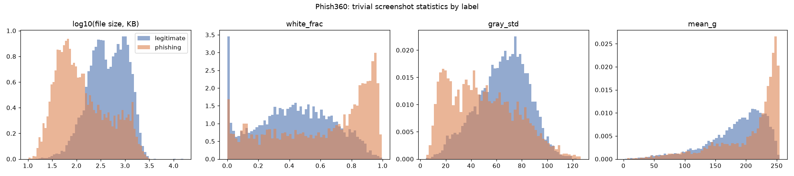
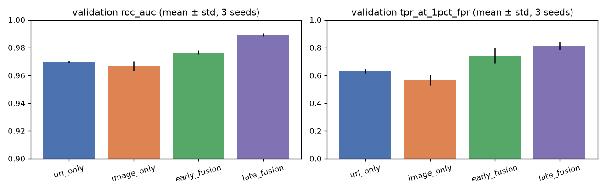
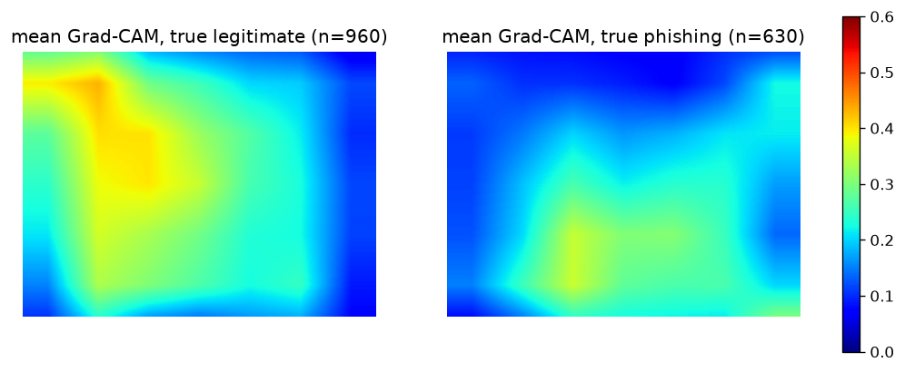
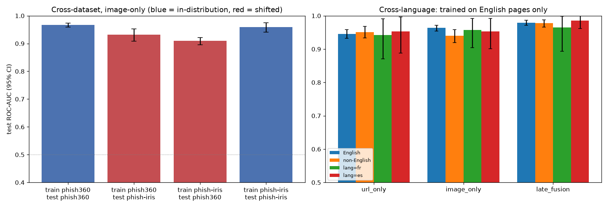

A generalization and shortcut study on Phish360 (2020-23) and Phish-IRIS (2018)
Yousuf Sharif Fahim
Live demo: yousuf-fahim.github.io/visual-phishing-detection
| Dataset | Samples | Content |
|---|---|---|
| Phish360 | 10,748 | URL + HTML + screenshot, 46 brands |
| Phish-IRIS | 2,849 | Screenshots, 14 brands + other |

Phish360: file size, whiteness and colour by label. Legitimate = busy homepages, phishing = sparse login forms.
Leakage: the official split puts near-duplicates of 15.5% of test pages in training, so we used our own grouped splits (pHash + domain), with 0 groups crossing.
Shortcut floor: a model on trivial statistics alone reaches
0.853 ROC-AUC on Phish360
0.995 on Phish-IRIS
| Phish360 test (n = 1,590) | ROC-AUC | Caught at 1% false alarms |
|---|---|---|
| Trivial statistics only | 0.853 | 19% |
| URL features (LightGBM) | 0.961 | 59% |
| Screenshot (MobileNetV3) | 0.967 | 47% |
| Early fusion | 0.983 | 70% |
| Late fusion (average) | 0.984 | 77% |

Validation, mean ± std over 3 seeds.

Mean Grad-CAM over all test pages: on phishing pages, attention sits below the form, not on the logo.
Where the shortcut points the wrong way:
0.967 → 0.809

| Screenshot model | ROC-AUC |
|---|---|
| In distribution | 0.967 |
| Phish360 → Phish-IRIS | 0.931 |
| Phish-IRIS → Phish360 | 0.910 |
| English → non-English | 0.940 |